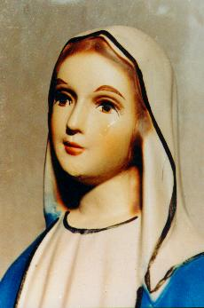

A ATUALIDADE- Em diversos lugares do mundo, imagens de NOSSA SENHORA
choram!...
A ATUALIDADE- Em diversos lugares do mundo, imagens de NOSSA SENHORA
choram!...
A ATUALIDADE- Em diversos lugares do mundo, imagens de NOSSA SENHORA
choram!...
Mas porque derramam lágrimas as imagens de nossa MÃE SANTÍSSIMA?
Somente para recordar, em Akita no Japão, em Outubro de 1973, além das mensagens e ensinamentos que a VIRGEM MARIA transmitiu a Irmã Agnes em benefício de todos nós, uma pequena imagem derramou copiosamente lágrimas de sangue; também a imagem de NOSSA SENHORA ROSA MÍSTICA na Itália, no ano de 1981 em diversas oportunidades chorou; e agora, é a imagem da VIRGEM MÃE SANTÍSSIMA em Naju, na Coréia do Sul... E desta vez, para que ninguém colocasse dúvida imaginando tratar-se de uma trama, foi um acontecimento verdadeiramente surpreendente, porque durante mais de 700 dias a imagem chorou e derramou lágrimas de sangue, na presença de leigos, autoridades eclesiásticas, homens, mulheres, crianças e especialistas de todas as partes, que inclusive recolheram e examinaram o precioso líquido, constatando tratar-se de sangue humano. De 30 de Junho de 1985 a Dezembro de 1992, o mundo teve tempo suficiente para comprovar que aquelas eram lágrimas verdadeiras que traduziam um sentimento de tristeza, por causa do comportamento inadequado e mesquinho da humanidade.
Mas porque afinal, nossa MÃE SANTÍSSIMA chora, derramando lágrimas até de sangue?

Frei Raymond Spies, diretor espiritual de Julia, com a imagem derramando lágrimas de sangue.
SIGNIFICADO DAS LÁGRIMAS - Verdadeiramente a humanidade não é aquela preciosidade
idealizada pelo CRIADOR, as fraquezas dominam o coração das pessoas, fazendo
com que em muitas oportunidades as criaturas cometam o mal que não querem praticar.
oportunidades as criaturas cometam o mal que não querem praticar.
Entretanto, não é lícito simplesmente aceitar uma situação por mais difícil que seja, sem reagir, deixando que as coisas aconteçam, sem respeito aos princípios da moral, da família e da religião, sem que seja empreendida uma resistência firme e decidida. As pessoas não podem e não devem permitir que fatos aconteçam por acomodação e conivência, visando ganhar vantagens ou consolidar posições. Estas são providências efêmeras, que podem satisfazer materialmente no momento, mas não trazem nenhuma paz interior e nenhum proveito para o espírito.
Sabemos, contudo, que não é tarefa fácil criar uma força contrária para combater o mal quando ele se avoluma e avassaladoramente incide sobre as almas, devastando e neutralizando o caráter e a fé, porque sendo uma potência invisível, para ser combatida eficazmente não requer somente a persistência e a perseverança das pessoas, mas exige, sobretudo, muita coragem, disposição e muitas orações. Somente o auxílio Divino poderá ajudar na conversão do coração, arrancando a pessoa do vicio, da decadência moral e da perdição. Por isso, é necessário rezar. È importante suplicar a imprescindível ajuda de DEUS, que por certo em todas as ocasiões jamais faltará, a todos que recorrem ao SENHOR, porque sem ele, ninguém conseguirá vencer as forças e as ciladas do mal.
Em Junho de 1987 a VIRGEM MARIA delicadamente explicou à Julia, os motivos de suas lágrimas: "Minhas lágrimas, querida filha, são pelo constante fracasso da humanidade em não conseguir amar a DEUS como ELE merece e as pessoas, amarem-se mutuamente como ELE ensinou. Também por causa do execrável aborto que mata diariamente uma quantidade incontável de bebês, assassinando inocentes no útero das mães, por covardia, maldade e prazer satânico. Choro também, minha filha, pelas muitas almas que se recusam a se arrependerem de seus pecados, não se interessando em procurar um meio para a conversão e por isso, com o risco da condenação eterna. Por todos eles, derramo as minhas lágrimas suplicando à DEUS pela conversão de seus corações".
NOSSA SENHORA verdadeiramente é nossa MÃE e preciosa medianeira para todas as causas, Aquela que intercede junto a seu Divino FILHO JESUS e sempre consegue as graças que necessitamos para a nossa vida!
Dessa forma, reconhecendo os incontáveis benefícios que maternalmente Ela cumula a vida de todos nós, não é justo pensarmos numa maneira de procurarmos retribuir? Não é digno encontrarmos disposição e enchermos o nosso espírito de coragem, decididos a consolar o Seu Divino e IMACULADO CORAÇÃO, tão rico em bondade e ternura? Por certo, verdadeiramente Ela espera isto de todos nós. Nossa resposta deve ser um esforço sincero e carinhoso, objetivando enxugarmos um pouco daquelas preciosas lágrimas que promanam do recanto mais profundo de Seu sagrado CORAÇÃO DE MÃE.
FOTOGRAFIAS
VIVAS - Por essa razão, como
lembrança inesquecível para ser gravada no interior do
espirito de cada um, apresentamos fotografias impressionantes das lágrimas
de nossa MÃE SANTÍSSIMA. Não é razoável assumirmos uma decisão de
enxugá-las?


OLEO PERFUMADO -
Depois que a imagem cessou de derramar lágrimas, de seu pequenino corpo,
principalmente da cabeça, entre os cabelos, sem que existisse qualquer orifício,
brotou um precioso e atraente óleo perfumado, que impregnava toda a Capela de
Naju, com um agradável e suave odor de rosas. Este fenômeno aconteceu até Outubro
de 1994. Durante aquele período e mesmo nos anos seguintes até meados de 1998,
quando o povo acompanhava Júlia na reza do Terço, era comum sentir o mesmo
perfume de rosas inundando completamente o recinto.
AS RAZÕES
DE NOSSA MÃE - Com esta intervenção
sensacional e merecedora do maior respeito e veneração, a VIRGEM
SANTÍSSIMA quer despertar a humanidade do torpor da indiferença,
da descrença, do desvanecimento espiritual e da falta de sensibilidade pelas
coisas do espírito, estimulando as pessoas a praticarem os ensinamentos do
Evangelho e a revitalizarem a fé cristã tradicional. Ela quer
que comecemos a viver uma vida de orações, em humildade, com amor a
DEUS e ao próximo, para podermos participar de uma
nova era de harmonia e paz no Reino de CRISTO.

Nossa Senhora chora ... E nós, o que vamos fazer para amenizar estas preciosas lágrimas?